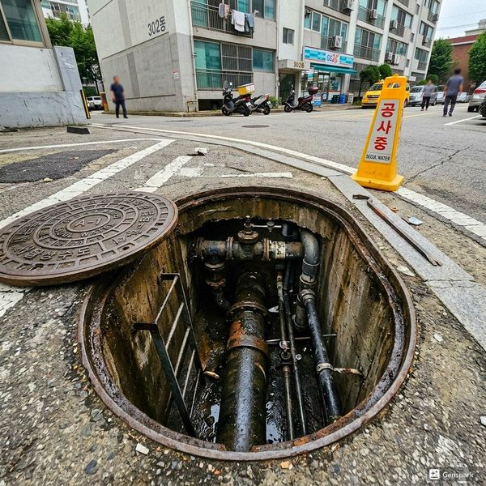
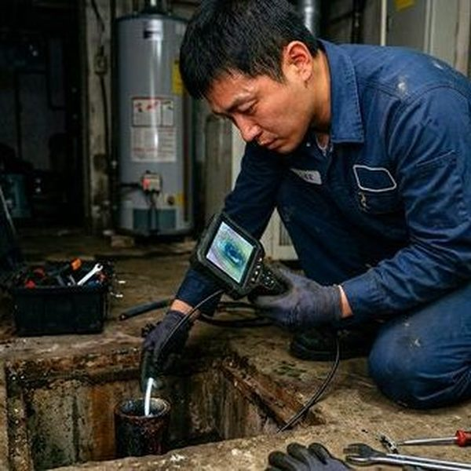
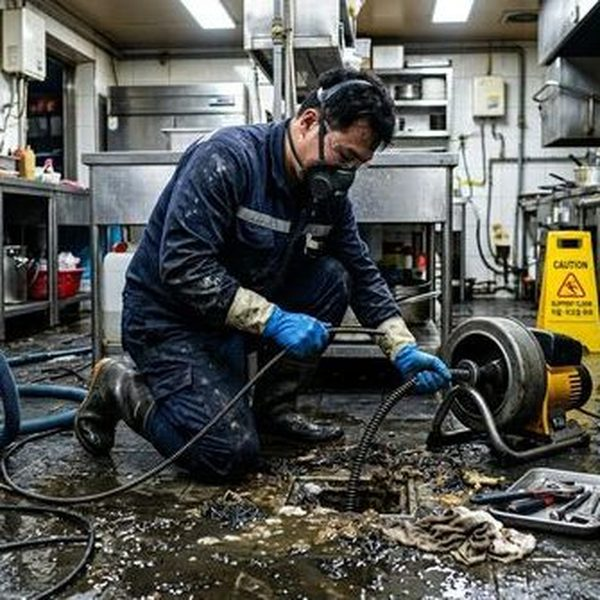

배관에서 발생하는 소음의 종류
아파트에서 발생하는 소음 중 상당수가 배관에서 기인합니다. 대표적인 배관 소음은 네 가지입니다. 첫째, 워터해머(수격현상)로 수전을 급히 잠글 때 '쾅' 하는 충격음이 발생합니다. 둘째, 온수 배관의 열팽창으로 '틱틱' '따각따각' 소리가 납니다. 셋째, 배수관을 타고 흐르는 물소리가 벽을 통해 전달됩니다. 넷째, 배관 고정 클램프의 이완으로 배관이 흔들리며 '덜컹덜컹' 소리를 냅니다. 이런 소음은 밤에 특히 크게 들려 층간 분쟁의 원인이 됩니다. 제우스시설관리는 배관 소음의 정확한 원인을 진단하고 근본적으로 해결합니다.

배관 소음 해결 방법
워터해머는 워터해머 어레스터(수격방지기) 설치로 해결합니다. 비용은 부속 포함 5만~15만원 수준입니다. 열팽창 소음은 신축이음관 설치나 배관 지지대 보강으로 해결하며, 배관이 벽을 관통하는 부분에 완충재를 삽입합니다. 배수 소음은 배수관에 방음재(흡음 테이프, 방음 파이프 커버)를 감아 해결합니다. 배관 고정 클램프 이완은 클램프를 재고정하거나 방진 클램프로 교체합니다. 제우스시설관리는 관로탐지기로 벽 내부 배관 위치를 정확히 파악하고, 최소한의 시공으로 소음을 해결합니다. 28분 내 출동으로 소음 문제를 빠르게 진단합니다.

자주 묻는 질문
Q. 배관 소음이 층간 소음 분쟁 대상이 되나요?
A. 배관 소음은 구조적 문제이므로 일반적인 층간 소음 분쟁과는 다르게, 관리사무소나 시공사에 하자보수를 요구할 수 있습니다.
Q. 워터해머 어레스터는 어디에 설치하나요?
A. 소음이 발생하는 수전 가장 가까운 급수 배관에 설치합니다. 주방, 세탁기 급수 밸브 쪽에 설치하는 경우가 가장 많습니다.